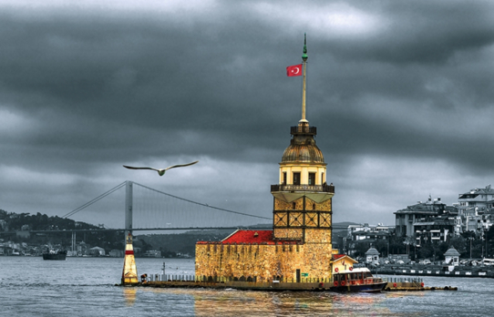

Kız Kulesi, İstanbul Boğazı'nın Marmara Denizi'ne yakın kısmında, Salacak açıklarında yer alan küçük adacık üzerinde inşa edilmiş yapıdır.
Üsküdar'ın sembolü hâline gelen kule, Üsküdar’da Bizans devrinden kalan tek eserdir. MÖ 24 yıllarına kadar uzanan bir geçmişe sahiptir.